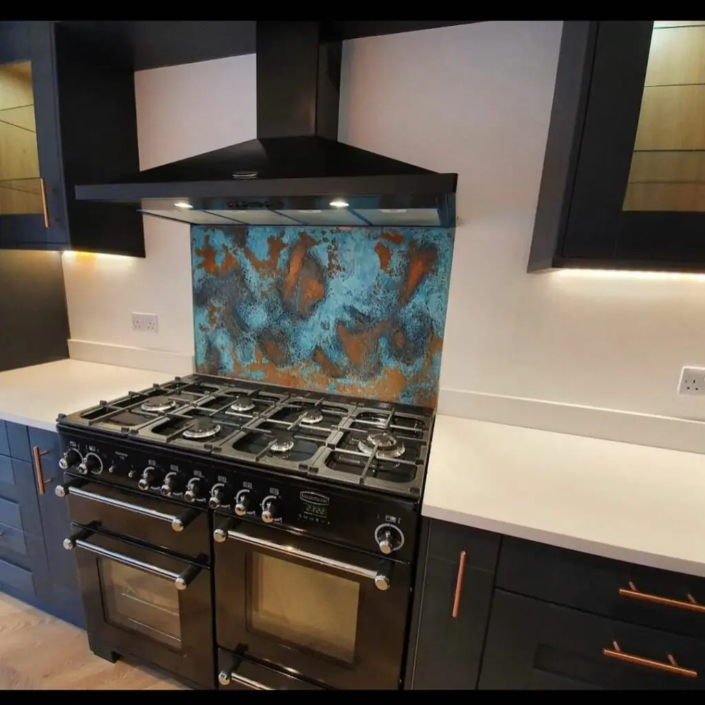

Warm, sumptuous, even antibacterial: there are many reasons why glorious copper is a clever choice for kitchens. But how can you use this metal megastar in your home? Let us count the ways. And share them with you, for irresistible inspiration…
1. A Special Sink
Why settle for plain old stainless steel when your kitchen sink could be a thing of beauty? Using aged copper like this transforms an everyday household essential into a bold focal point of the room. And when copper is paired with blue, the contrast is perfect. This subtle, dappled finish of this gently- patinated copper offers real depth and a heritage feel. Matching industrial taps are the icing on the cake.
2. On the Tiles
Can’t decide between ceramic tiles and a metal splashback ? These vintage-style copper splashback tiles are the perfect combination of both. Choose from a traditional finish like this, or go for a more colourful aged copper design. Understated, matte black units let the tiles really dazzle. Thoughtful matching touches like the angular door handles and cooking tools tie the whole theme together.
3. Pots and Pans
Why hide pots and pans away in cupboards when they can bring so much to your decor? To many, American TV personality Martha Stewart is the goddess of domesticity, a woman who knows a thing or two about cooking and home decor. For this update of her farmhouse kitchen, she let the tools of her trade take centre stage. Note the glowing copper tools hanging from the rack above the island. All the drama of a ceiling pendant light, and practical as well.
3. A Copper-Clad Counter
Copper worktops are a genius move in the kitchen. Not only are they durable and uniquely good-looking, they’re easy to clean and even have antibacterial qualities. For many years, copper bar tops have been common in the hospitality industry, and now they’re appearing in style-savvy kitchens as well. We love how this one extends into the sink and up the wall to create a seamless aged copper splashback. Once again, blue is the perfect match.
4. Industrial Doors
This exquisite aged copper with its rich, deep tones really brings these kitchen cupboards to life. No one could fail to be impressed by these statement unit doors, which make a real talking point in this incredible kitchen. You may think other metals might clash with copper, but as you can see from the extractor here, that isn’t the case. Mixing metals is a smart way to achieve an authentic industrial look.
5. Dark and Stormy
This sophisticated kitchen makes full use of patinated copper with dramatic effect. In addition to copper wall panels and worktops, a long strip of copper cladding creates a slick overhead light feature. Stunning copper lampshades over the kitchen island add balance on the opposite side. We love how the swirls and textures of the aged copper reflect those on the grey floors and walls.
6. Shiny and New
Copper doesn’t have to be aged in order to look good in the kitchen. Many designers prefer to work with untreated copper, letting its signature pinkish hues show through. Here’s a prime example of a subtly-brushed copper splashback in a wraparound style. Not just limited to the space behind the stove or sink, this deep band of copper works its way around the circumference of the kitchen, protecting walls and becoming a feature in its own right..
7. Penny Project
If you’ve got the patience and creativity, you could try making a copper counter top using copper coins and resin. A host of project ideas for this method can be found online. As well as kitchen worktops, copper coins have been used to make flooring, sometimes in elaborate mosaic-style patterns. It might take a long time and require a lot of accuracy, but it should only cost… pennies.
8. Copper Tabletop
It’s not just kitchen worktops that benefit from copper cladding; it can work wonders for kitchen tables, too. This one is natural and smooth, but you could pick out a distressed copper finish instead for more texture and interest. We love how this vast, centrepiece table is complemented by the parquet flooring, and the muted olive green on the walls and cupboards exudes a sense of classy calm.
9. Hotting Up
A vintage-style radiator can bring warmth to your kitchen in more ways than one. This one is especially well-matched to that lush green wall. Fitting a copper radiator to a room with other copper features can help tie the theme together, especially in a dining room adjacent or open to the kitchen. Check out those jaw-dropping lighting features, too.
10. Vibrant Verdigris

Achieve a more impactful look by going for a heavily-aged design like this patinated copper splashback in the unique Northumberland finish . When copper oxidises, it completely transforms in colour. Those swirls of bright turquoise are called verdigris, and are reminiscent of of an aerial photograph of exotic islands. Although the splashback has been carefully hand-aged in the workshop, it comes fully lacquered to halt any further aging – and make it brilliantly easy to clean.


If you can dream it, we’ll make it.
Bars, balustrades, staircases, worktops, cladding and pieces that don’t have a name yet. Our designers and craftspeople work in brass, copper, zinc and steel, and alongside wood.